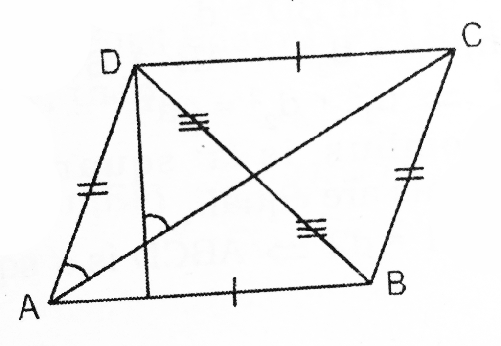

parallelogram
"...there are innumerable intersecting forces,
an infinite series of parallelograms of forces
which give rise to one resultant—the historical event."

Dialogue 1:
On the professional-managerial class
Dialogue 2:
On social democracy and cross-class alliances
Dialogue 3:
On historical materialism